小径分岔的银河
■ 方言小注
| 词 | 意思 | 例句 |
|---|---|---|
| 碎娃娃 | 小孩子、小不点 | "碎娃娃嘴里有神"——小孩子说话像有神启 |
| 过事 | 办事、干活、料理 | "你帮奶奶过事一下灶台" |
| 耍 | 玩、闲逛 | "上山耍去" |
| 莫 | 别、不要 | "莫跑远了" |
| 啥子 | 什么 | "你看到啥子了？" |
| 晓不得 | 不知道 | "我晓不得那是啥子星" |
| 安逸 | 舒服、好 | "今晚星空好安逸" |
| 摆龙门阵 | 聊天、讲故事 | "晚上在院子摆龙门阵" |
| 架势 | 开始、使劲 | "孩子们架势跑" |
| 拐了 | 糟了、坏了 | "拐了，云上来了" |
| 巴适 | 很好、妥帖 | "这茶巴适" |
老槐树还是那棵老槐树。
坐在树下朝南看，能望见稻田一层一层矮下去，最远的地方和天色融在一起，像用毛笔蘸淡墨扫过一笔。身后是村子的方向，偶尔传来一两声狗叫，隔得很远，闷闷的。面前横着一条石板路，缝里挤满了车前草和婆婆纳，蓝莹莹的小花贴着地皮开，不凑近根本注意不到。
蛙鸣已经开始了。先是东边水田里试探似的叫一两声，接着西边接过去，然后四面八方都响起来，像有人在暗处击节。初听是乱糟糟一片，听久了能分辨出层次——近处的清脆，远处的浑厚，偶尔有一只叫得特别响亮的，把周围的都压下去，等它歇了，蛙声又恢复成一片均匀的底噪。
头顶是银河。
说"看见银河"其实不太准确。你第一眼看到的并不是河，是一大片稠密得不像话的星星，多到让人心里发慌。然后你试着把目光散开，不去盯任何一颗星——这时候就看见了：一条微微发亮的带子，从东边的山头横过去，一直伸到西边老槐树的树梢后面，像有人在天上泼了半杯掺了荧光粉的牛奶。看久了会觉得它不是静止的，好像在极其缓慢地流动。
我今年二十七岁，在省城工作。每年暑假回来住一周。村里人越来越少，年轻一辈大都出去了。留在村里的老人见我回来还是会招呼一声："哟，林家老二回来了？"好像这七八年我从没离开过。
我在槐树下坐到夜深。蛙声渐渐弱下去，像是整个田野翻了个身，睡沉了。银河还在头顶亮着。我想起一个人——不是想念，是想起——想起堂哥林远。
他是第一个教我抬头看天的人。
说起来得从很多年前讲起。那时我还是个只关心地上事物的碎娃娃——蚂蚁搬家、田鸡跳水、灶膛里藏红薯——天对我来说就是一个会从亮变暗又变亮的东西，没什么特别。是堂哥让我知道了天上有北斗七星、有猎户腰带上的三连星、有一条每年夏天准时出现的银河。更重要的是，他让我知道了抬头这个动作本身的意义——不是寻找什么具体的答案，是确认自己在这个世界上的坐标。星空像一个巨大的参照系，看它一眼，你就知道自己在哪、家在哪、北在哪。
我五六岁那年夏天，蝉叫得特别凶。院子里那棵老槐树上的蝉好像比赛似的，一只起了头，全村的蝉都跟着喊，喊得连大人说话都得提高嗓门。
我蹲在门槛上拿根树枝逗蚂蚁，听见奶奶在屋里喊："快进来，你远哥回来了！"
我跑进去，看见一个瘦高的少年站在堂屋中间，穿一件洗得发白的蓝衬衫，袖子卷到胳膊肘，手里拎着个旧帆布包。他大概十四五岁，皮肤被太阳晒得黑黑的，但整个人很安静，像一棵立在风里不怎么晃动的树。奶奶在旁边笑得眼睛眯成缝，一个劲往他手里塞煮鸡蛋："县城里吃不到家里的蛋，拿着拿着。"
堂哥看见我，把帆布包放在桌上，走过来蹲下——他是蹲下来和我说话的，没有像别的大人那样低头俯视。他看着我笑了笑，说："你是小航吧？上次见你还抱在手里。"
我说："你是远哥。"
"嗯。"他从包里摸出一本书，封面很旧，边角都磨毛了，递到我手上，"给你的。上面有很多画。"
我接过来。封面上印着《星空图鉴》四个字，翻开第一页是一张彩色的星图，大大小小的圆点连成各种形状，旁边注着字：大熊座、猎户座、仙女座。我那时候认不得几个字，但那些图案太吸引人了——它们不像是人画出来的，像是天上本来就有的，只是被人用线勾了出来。我蹲在门槛上翻了一遍，又翻了一遍，每翻一遍都能发现新东西——这一页的星星是蓝色的，那一页的星星是红色的，还有一页画了一条横贯整页的灰白色带子，下面写着两个我不认识的字（后来知道是"银河"）。
"天上有这么多东西？"我问。在这之前我以为天上只有太阳、月亮和星星——星星在我脑子里就是"很多亮点"，没有名字也没有形状。
"比这书里画的还多。"堂哥坐在门槛上，指着门外白花花的天空，"白天看不见，晚上才出来。要等。"
我就等。等天黑。
晚上奶奶在院子点了蚊香，我抱着书坐在堂哥旁边，仰头在天上找书上画的东西。找来找去找不着，急得抓耳挠腮。堂哥说："今天有月亮，星星被月亮的光遮住了。等没有月亮的时候，我带你看。"
他没有当天就带我找星星——这是堂哥的性格，他不着急，他知道有些东西需要合适的时机。
那晚我在蚊香的烟里睡着了，手里还攥着那本书。醒来时已经在床上，书被平整地放在枕头边。堂哥坐在院子里的竹椅上，手里拿着另一本书在看。堂屋的灯从门缝漏出去，在他背上切了一道明晃晃的光。他看得很专注，偶尔翻一页，动作很轻。
后来我发现，堂哥看书时有个习惯——遇到觉得特别好的段落，会停下来抬眼看看远处（通常是院门口那棵枣树的方向），好像在脑子里把那段话重新过一遍，然后才继续往下读。这个习惯后来我自己读书时也不自觉地养成了。有一回我在学校图书馆里这么抬眼望窗外，对面的同学问我"你在看什么"。我说没看什么，就是刚才那段写得好，需要消化一下。他一脸茫然。我想堂哥大概也被很多人问过同样的问题。
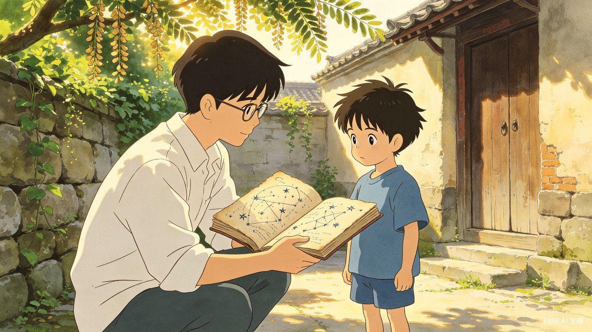
那之后的几年，见堂哥的机会并不多。他在县城读书，只有寒暑假回来。我上小学，放寒暑假也回村——父母在镇上做工，逢假期就把我送到奶奶家。
碰上了就一起待着，碰不上也就算了。小孩子的世界里有的是事情忙：和阿福去水渠捞鱼、和小满在打谷场捉迷藏、爬后山摘野莓吃。堂哥在我眼里就像院子里那棵老槐树——知道他在那，偶尔会注意到，但多数时候只是背景。
有一年暑假，下午热得人不想动。堂哥搬了把竹椅坐在槐树荫下看书，膝盖上摊着一本很厚的书，封皮是深蓝色的。我玩累了，也搬了个小凳坐过去，翻自己的小人书。两人隔着两三步远，各看各的，偶尔有槐花落下来掉在书页上，就伸手拂掉。蝉在头顶叫个没完，但树下倒不觉得烦——好像蝉叫声和树荫是配套的。
奶奶端了两碗绿豆汤出来，一碗给他，一碗给我。堂哥放下书说"谢谢奶奶"，喝了两口又继续看。我也喝，喝完了把碗放在地上继续看小人书。
有一天下午，阿福和小满来找我去水渠捞鱼。阿福扛着个簸箕，小满提了个铁皮桶。我们沿着水渠走了快一里地，找到了一个水浅的地方，两边用石头一堵，簸箕往水里一插，踩几脚浑水，鱼就翻白肚了。捞了十来条，最大的还没巴掌长。阿福说要拿回去让他奶奶油炸，小满说不如烤了吃。后来还是在河滩上用石头垒了个灶，捡干树枝生火烤了。鱼肉嫩，但刺多，吃得个个嘴上黑乎乎的。
堂哥对这些不感兴趣——他不捞鱼、不爬树、不捉迷藏。但他也不觉得我们幼稚。有时候他看书看累了，会站到田埂上看我们疯跑，像看一群田里打架的麻雀。看一会儿，又回去看书了。
那天傍晚吃饭，奶奶问他看什么书。他说是一本讲植物的，在学校图书馆借的，里面有很多草药。奶奶来劲了，说起田埂上哪种草能治拉肚子、哪种能消炎。堂哥听得很认真，还拿出个小本子记了两笔。奶奶说他："书都读到哪儿去了，这些还要记？"堂哥笑："读的书里没有这些。书上写的和您讲的不一样。"
又一年夏天的晚上，没有月亮。奶奶在老槐树下摇蒲扇，我趴在凉席上数天上的星星。堂哥从屋里出来，看见我在数，走过来站了一会儿，然后伸出手指："你看那七颗星，连起来像不像一把勺子？"
我顺着他手指的方向看——还真是，七颗星排成一个勺子的形状，勺柄弯弯的。
"那是北斗七星。"他说，"找到它就能找到北。夜里走路不会丢。"
我说："我在村里又不会丢。"
他想了想说："以后你去的地方多了，就不一定了。"
我当时没太懂这句话。但当晚我躺在床上，透过窗子找到那七颗星，看了很久才睡着。
北斗七星在村子上空偏北的位置，只要天气好，抬头就能看见。很多年后我才知道，有些人在城市里生活了一辈子，一次北斗七星也没见过——不是因为看不到星空，是因为从来没有想过要抬头。
还有一年春节，堂哥带回来一台旧望远镜——是学校天文兴趣小组淘汰下来的，他花了几十块买下来修好了。大年初二晚上，他在院子里支起三脚架，让村里孩子们排队看月亮上的环形山。阿福第一个看，看完大呼小叫："月亮上好多坑！像饼子上被人抠过的！"小满看完说像蜂巢。那天晚上孩子们排了两轮还意犹未尽，奶奶在旁边嗑瓜子，说："看了这么多年月亮，头一回知道它长这样。"堂哥听了，把望远镜调到土星的方向，让奶奶看："奶，你来看这个。"奶奶眯着眼看了半天，说："这个星咋还戴个草帽的？"堂哥笑着解释那是土星环。奶奶说："你们读书人真是啥子都知道。"语气里不全是夸——也有点感慨，大概是觉得自己没读过书上过学，错过了很多东西。堂哥大概听出来了，说了一句很得体的话："奶，你认得的草药比我认得的星还多。什么有用，不在于你在哪学的。"奶奶笑笑，继续嗑瓜子了。
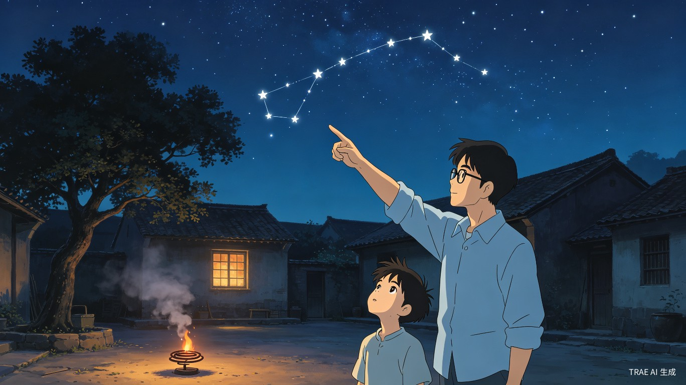
我上高中的时候，堂哥已经在省城的大学里留校任教了。他每年还回来，但待的时间越来越短——有时候是大年三十回来，初三就走了。我也有了自己的学业，暑假要补课，寒假作业堆成山。兄弟俩见面的次数一只手数得过来。
但我在老家发现了一批"宝藏"——堂哥留在家里的书。老屋二楼有个旧木箱，里面整整齐齐码着他的书，大部分是他中学和大学时用零花钱买的。有天文科普、植物图鉴、几本关于地方志的旧书，还有一本手抄的星图，是他自己画的，用铅笔标注了每颗星的视星等。箱底还有一本厚厚的剪报，是他把报纸和杂志上关于天文发现的文章剪下来贴在一起的——从哈雷彗星回归到旅行者号飞出太阳系，每一条都用红笔圈了日期。我坐在二楼的地板上，一翻就是一下午。
奶奶上楼喊我吃饭，看见我坐在一摊旧书中间，说："和你远哥一个样——看到书就听不见人叫。"又说，"他小时候也这样，能在楼上坐一天不下来。我拿竹竿捅天花板才叫得动。"
我开始一本一本地读。有些内容看不懂，就跳过去；有些能看懂的，就反复看好几遍。那本《星空图鉴》我已经从第一页翻到了最后一页，还是会时不时拿出来重新认一遍星座。那本手抄星图让我印象最深——不是为了学术，是他在每张星图旁边注了他第一次看见这个星座的日期和地点。比如猎户座旁边写着："腊月十二，院门口枣树下，第一次注意到腰带三星。"天狼星旁边写着："大年初五，屋顶，这颗星亮得失真，像有人在天上挂了一颗图钉。"
有一年春节，堂哥回来过三十。吃完年夜饭，大人在堂屋里打牌，我们俩坐在灶房门口烤火。灶膛里的火映在脸上暖烘烘的，柴烧得噼啪响。
他问我在学校怎么样。我说还行，就是物理有点难。他问哪部分难，我说天体运动那块——公式太多了。他捡了根柴棍，在灶房的地上画起图来，把万有引力的公式拆开讲了一遍。他讲得很慢，每画一步就问我"这里懂不懂"。地上是灰土，画完踩两脚就没了。
讲完物理，他突然问："你为什么喜欢看星星？"
我愣了一下。说不上来。不是考卷上的兴趣题，不需要标准答案。我想了想说："村里晚上没什么可看的，除了星星。"
堂哥笑了笑，把烧短的柴棍扔进灶膛，看着火光说："城市里看不见几颗星。每次回来，才觉得天是完整的。"
他说这话的时候语气很平常，像在讲一个简单的物理事实。但我记住了，一直记到现在。
那天晚上他从包里掏出一本书给我，是一本《通俗天文学》，扉页上写着："小航，天上的事比地上的有趣。——远哥"。
我接过来翻了两页，里面有不少手写的批注，是他读的时候记下的。有些是补充的公式推导，有些是"此处翻译有误"，还有一条写着："这段写得太好了，读了三遍。"
堂哥没有再说什么。我们坐在灶房门口，火渐渐小下去，外面不知道什么时候开始飘起了雪粒。透过门缝能看到天空阴沉沉的，一颗星也看不见。但我知道它们都在——只是暂时躲在云后面。就像有些东西，不需要每天看见，但你知道它一直在那里。
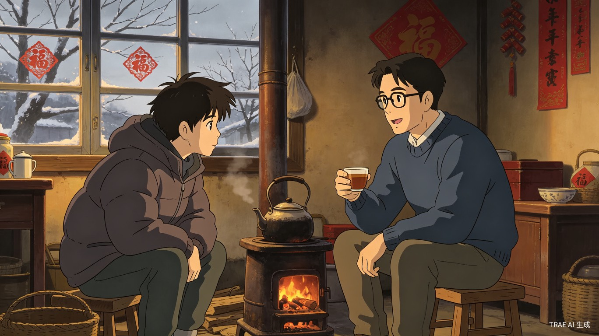
高考填志愿时我选了省城的大学。没什么特别的理由——分数够得上，离家不算太远。父母觉得挺好，奶奶说"那你和你远哥在一个城里了，好照应"。我倒没想那么多。和一个几年见不了几次面的堂哥同城，对当时十八岁的我来说，跟地理书上的城市名差不多——知道在那儿，但觉得很远。
大一第一个暑假，堂哥发消息问我什么时候回村。我说考完就走。他说行，一起。
我们在长途汽车站碰头。他穿一件灰色T恤，背一个和多年前差不多的帆布包，只是旧了很多。见面第一句话是："考得怎么样？"我愣了一下才反应过来他说的是期末考试。"还行，高数刚过。"他点点头："过了就行。大学高数过了就是胜利。"
长途车在高速上跑了三个小时，又在山路上颠了四十分钟。窗外从高楼变成矮楼，从矮楼变成稻田。空气里开始有了泥土和草叶的味道。堂哥一路没怎么说话，偶尔指窗外告诉我：那片山头以前是公社的茶场，下面那条河夏天可以游泳。
到了村口，石板路还是那条石板路，老槐树还是那棵老槐树。奶奶早就在门口等着了，远远看见我们就开始喊："远娃！航娃！"两个人都被她叫成了"娃"。她系着一条洗得发白的蓝布围裙，手里还拿着一把刚摘的空心菜，显然是刚从菜园跑出来的。见面第一件事不是拥抱——农村人不兴这个——是上下打量了一遍，然后说："瘦了，两个都瘦了。学校的饭吃不饱人。"
堂哥笑着把行李放下，接过奶奶手里的菜："我来洗。"奶奶不让他动手，说坐车累，先去歇着。堂哥不听，已经蹲在水井边开始择菜了。奶奶转头看我："航娃你也去歇。"我说不累，就蹲在堂哥旁边，一人择一把菜。井水冰凉，冲在手上很舒服。
傍晚，奶奶做了腊肉炒蒜薹和冬瓜排骨汤。吃完饭，堂哥从厨房拎了壶茶出来，在院子里摆了两把竹椅。天色刚开始暗，西边还剩一抹橙红，东边已经能看见几颗亮星。
他倒了杯茶给我，问："大学还适应？"
我说还行，就是比想象的大，人也多。他说正常，他刚上大学时也有同感——从一个小地方到省城，像一条溪里的鱼游进了大江，方向感会丢一阵子。
我问他："哥，你当时为什么没留在省城工作？你成绩那么好，留校的也都是最优秀的。"
他喝了口茶，看着远处的山头说："离家近些。想看星星的时候就能回来。"顿了顿又说，"我的研究方向是天体物理，在省城也方便——有个天文台的分站。"
这话他说得理所当然，没有任何自我感动的意思。就像在说"今天天气不错"或者"这茶有点淡"。但我听出了另一层意思：他做选择的时候，把家和星星放在了一起。
"那你做的研究主要是哪方面？"我问。他说主要是恒星的演化末期——白矮星和中子星。我问他为什么选这个方向，他想了想说："因为星星老了之后是什么样，和它们年轻时长什么样一样有意思。一颗恒星从生到死，走完的是几十亿年。人类观测天文学才几百年，我们在宇宙的时间尺度上连一秒钟都不到。"他倒了杯茶，又说，"研究宇宙的人，要么变得特别狂妄，要么变得特别谦虚。还好我们系都是谦虚的。"这句话我一直记得——不是因为它深刻，是因为它真实。
"今晚云少，带你上山看银河。"他忽然站起来。
我们一人拿一手电筒，沿着后山的土路往上走。路两边是密密匝匝的松树，手电筒的光扫过去，偶尔能看见松鼠被惊得窜上去。走了大约二十分钟，到了一个山顶的平台——是村里以前晒稻谷的场院，后来废弃了，长了些野草，但视野极好。
"抬头。"他说。
我抬起头。然后整个人像被人从背后推了一掌，脑子里什么想法都没有了。
银河正正地横在头顶。不是书上印的那种淡淡的、需要努力辨认的光带，而是真真切切、伸手就能碰到似的东西。稠密得像夏夜的萤火虫全部飞到了天上，一层叠一层，亮的地方发白，暗的地方泛青。中间有一条黑色的裂纹纵贯而过——后来堂哥告诉我那是暗星云，是尘埃挡在星前面形成的阴影。
我站了很久，一句话都说不出来。不是感动，是被吓住了。就像第一次看见海的人发现陆地那么小一样，我第一次"真的"看见银河，才发现自己原来那么小、那么微不足道。
堂哥站在旁边，等我自己缓过劲来。过了一会儿他说："银河系的直径大约是十万光年。一光年就是光走一年的距离。我们现在看到的这些光，有些走了几万年才到这里。"他指着银河中心方向最亮的那一团，"那里有一个超大质量黑洞，质量大约是太阳的四百万倍。"
我听着，觉得自己的脑子在罢工——这些数字太大了，大到没有意义。但同时我又觉得心安。一种奇怪的心安。好像知道了宇宙这么大之后，身边那些让人烦心的事——考试排名、奖学金申请、同学间的小矛盾——突然变得不值一提了。
"哥，你第一次看到银河是什么时候？"
"高中。一个物理老师带我们几个上山的。"他顿了顿，"那个老师后来调走了。但这个山头我每年暑假都来。"
我们在山顶待到快十二点。下山的时候，手电筒的光只能照亮脚下两三步，再远就是彻底的黑暗。但头顶有星星照着，路倒不觉得难走。
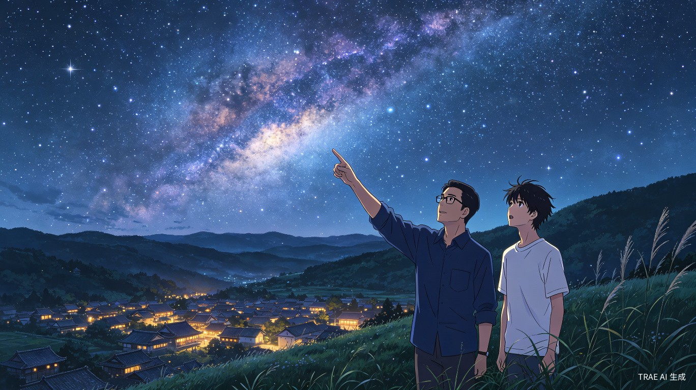
那个暑假我发现堂哥和我有一个共同的兴趣——都喜欢看山里的野花野草。他是从学术角度，我是纯粹觉得好看。但这不碍事，我俩可以在一条田埂上走一下午。
一天傍晚，凉快了些，他叫我去村后山走走。走到一片荒坡，他停下了，指着路边一丛开着紫色小花的藤蔓："这是鸡屎藤，名字不好听，但能治风湿。奶奶以前关节疼，就用这个煮水洗。"又往前走了几步，蹲下来看一株贴着地皮长的草："紫花地丁，清热的，小时候扁桃体发炎，奶奶给我熬这个喝。"
他忽然抬头问我："你有没有发现一件事——这些草药的名字，普通话都不好听，但方言叫起来就不一样。鸡屎藤用方言叫出来没那么恶心，紫花地丁用方言叫，听起来像一个人的名字。"我想了一下，还真是。方言里这些名字的发音更圆润，像被溪水冲刷过的鹅卵石，棱角都磨掉了。
"你怎么记住这么多？"我问。
"被奶奶骂出来的。"他站起来拍拍膝盖上的土，"小时候跟着她挖草药，认错一株就挨骂。她还说，认错了不是丢面子，是吃错了要人命。"
我笑起来。奶奶骂人我是领教过的——嗓门大，中气足，但她骂完了马上给你煮红糖水喝。
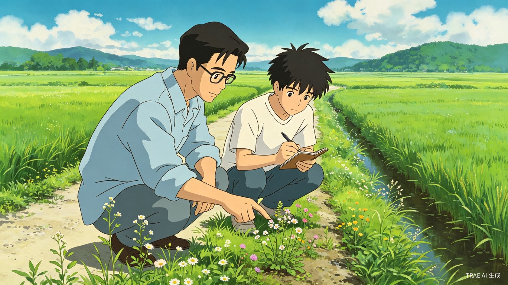
走着走着，我们到了村西头一个废弃的磨坊。说废弃也不准确——是前些年通了电，有了机器磨面，水力的老磨坊就没人用了。门板已经掉了一块，屋檐上长了青苔，石磨盘上落满了灰和鸟粪。
堂哥推开门，弯腰钻进去。我跟在后面，看见他在墙角捡起一样东西——是一本很薄的书，封面已经看不清了，纸张发黄变脆，但还没有完全烂掉。他小心地翻开，扉页上有一行铅笔字：
"春山一路鸟空啼。一九七三年秋。"
字迹很纤细，像女人写的。堂哥翻了几页，里面是手抄的一些诗文，中间夹着几张干透了的野花标本。
"这会是啥子人留下的？"我凑过去看。
他想了想，说磨坊以前是村里的集会地点，大概是谁在这里等碾米的时候随手写的。他把书重新合上，放回了原处。"别人的东西，"他说，"留在这儿比带走好。"
回去的路上，我们讨论那行诗是谁写的、为什么写在磨坊里。堂哥说可能是村里以前那个民办教师，姓周，教了三十年书，后来县城并校，他就退休了。我说也可能是下乡知青，以前村里来过知青。
没讨论出结论。但那天傍晚的走路和猜测，比很多有结论的事都让人记得牢。
后来我们又去过一次磨坊，想看看能不能再找到别的线索。翻了半天，除了半截铅笔头和几块碎瓦片，什么也没有。出门时堂哥指着磨坊门框上一道很深的凹槽说："你看，这是石磨转的时候绳子勒出来的印。不知道转了多少年才勒这么深。"他用手指顺着凹槽摸了一遍，那动作很轻，像是在摸一件古董。
那一刻我忽然理解了堂哥为什么对地方志感兴趣——他不是在收集资料，他是在摸这个村子的脉搏。老磨坊、石板路、田埂上的野花、奶奶嘴里的偏方，这些东西放在一起才是一个完整的村子。少一样都不完整。
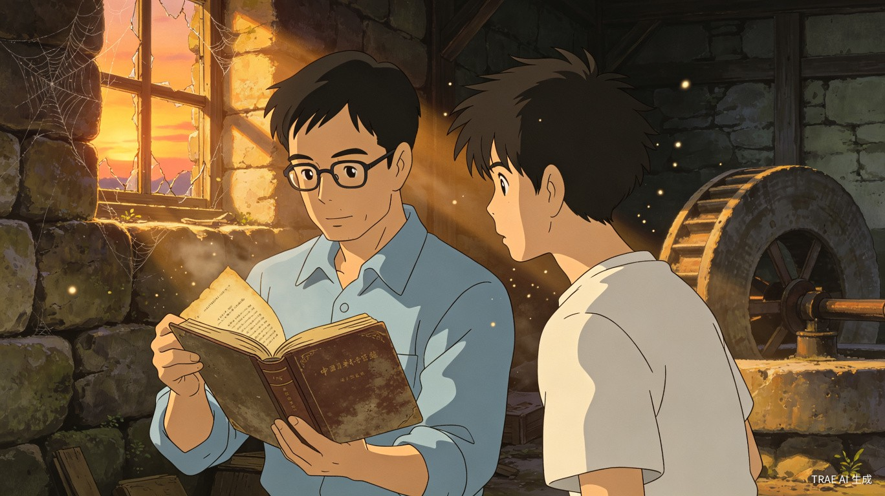
八月中旬，英仙座流星雨。堂哥提前两天就查好了预报，说今年极大值在凌晨两点左右，月相也合适。他给村里几个孩子打了招呼——阿福、小满、还有隔壁老周家的孙女小梅。消息传得比打电话快，到傍晚出发时，一共来了九个孩子，最大的十三岁，最小的才五岁，由他姐姐牵着。
堂哥在前开路，我殿后。孩子们排成一条歪歪扭扭的队伍，每人拿着一个小手电筒，光的柱子在黑暗中晃来晃去，像一群萤火虫在林子里乱窜。阿福一边走一边喊："流星是啥子嘛？掉下来砸到脑壳咋办？"小满接话："砸到你脑壳，你就变成星星了。"一队人笑成一团。
到了山顶的平台，堂哥让孩子们把带来的旧凉席铺在地上，所有人躺成一排，面朝天。几个小的躺不住，没两分钟就翻来覆去，被他姐姐按住了。大一点的倒安静，眼珠子瞪得圆圆的，像一群等开饭的小猫。
"还没有流星嘛！"阿福喊。
"等。"堂哥说。
等了大概二十分钟。忽然一道白光从头顶划过，快到来不及眨眼。"啊——！"所有孩子同时尖叫起来，那个五岁的小孩子吓得一把搂住他姐姐的胳膊，然后又赶紧松开——怕错过下一颗。
"看到了没？那就是流星。"堂哥的声音很稳，像在上课，"它是流星体进入地球大气层，和空气摩擦产生的光。流星体本身很小，可能只有一粒沙子那么大，但它飞得很快——每秒几十公里。摩擦产生的温度有几千度，所以它会发光、会烧掉。大部分流星在落地之前就烧完了，不会砸到人。"
"那英仙座是啥子？"小满问。
"是一个星座。"堂哥用手指在夜空中圈出一片区域，"英仙座流星雨每年八月份出现，因为地球这个时候会经过一团尘埃——那是彗星留下的。你看到的所有流星，都像是从英仙座那个方向飞出来的。"
孩子们不太理解尘埃和彗星的关系，但"每年都有"这四个字让他们兴奋不已。阿福大叫："那明年我还来！"其他人纷纷附和。
我坐在旁边帮忙维持秩序——主要是拦着几个想站起来跑的。看着堂哥半跪在凉席边，用手电筒的弱光照着自己画的简易星图，一个接一个地回答孩子们各种古怪的问题（"流星有没有声音？""星星上住人不？""能找到外星人不？"），忽然觉得他真适合当老师。不是那种站在讲台上念讲义的老师，是那种蹲下来和孩子平视，用他们能听懂的话把复杂的东西讲清楚的老师。
那晚一共数了多少颗流星，后来谁也说不出一个准数。阿福说他数了四十七，小满说她数了五十二，另外一个孩子说他看到了至少一百颗——"反正很多！"堂哥笑："数量不重要。重要的是你们知道——每年这个时候，天上都会有流星。"
下山的时候孩子们还在争论那颗最亮的流星是谁先看到的。小满说"那颗拖尾巴最长的！是我先喊的！"阿福不服："你喊的时候它已经飞了一半了，我从头看到尾的！"堂哥走在队伍中间，偶尔插一句："都是好眼力——"然后话题一转，"你们回去写一篇日记，把今晚看到的写下来。不要求字数，但要把你印象最深的那颗流星的样子写清楚。"孩子们发出一片哀嚎："啊——还要写日记？"堂哥不为所动："不写也行，下次不带。"阿福立刻改口："写！我写！我最爱写日记了！"大家又笑成一团。
下山的时候，一个孩子睡着了，堂哥把他背起来。手电光在松树林中忽明忽暗。走到半路，他忽然回头和我说："等以后我有孩子了，也带来看。"
这话他说得不像是一句宣言，更像是随口提到了一件理所当然的事——种稻子的人会想让孩子也认识稻田，看星星的人自然会想让孩子也认识星星。我在后面应了声"嗯"，心想那是自然的事。

堂哥结婚那年我大三。暑假回村，在村口就看见了那个传说中的"嫂子"——她站在老槐树下，穿一件藕荷色的连衣裙，手里拿着把蒲扇在扇蚊子，看见我们走过来，笑着挥挥手："远，这个就是你堂弟吧？"
嫂子叫苏若兰，城里人，在出版社做编辑。堂哥去出版社查资料时认识的。她说第一次见面堂哥在查一本民国时期的地方志，身上有股淡淡的油墨味和旧书霉味，她觉得这个人"很安静，但很有内容"。
她对乡村一切都觉得新鲜。看见水牛要拍照，看见母鸡带着小鸡要拍照，看见老磨坊的门板烂了一半也要拍照。奶奶在灶房忙活，她一定要帮忙，结果切菜的架势"一看就没做过饭"，被奶奶笑称"城里娃的手是拿笔的"。但她很认真地学，跟着奶奶包粽子，包了七八个总算有一个勉强成形的，高兴得端给堂哥看。堂哥看了一眼说："嗯，像粽叶里包了一团米。"嫂子笑着拍了他一下。
晚上在院子里乘凉，嫂子看着满天的星说："天哪，这么多星——我在城里活了二十多年，从来没见过。"堂哥在旁边拿手指给她认星座。她看得认真，时不时发出"哦——"的声音。然后她忽然问了个很直接的问题："你当初为什么没留在更发达的城市？"
堂哥还是那个回答："离家近些。想看星星就能回来。"
嫂子听完沉默了几秒，然后说了句让人意外的话："那我跟你一起回来。"
堂哥愣住了。嫂子接着说："反正我是做编辑的，在哪都能干活。城里房子还贵。这儿空气好、水好，还能看星星。划得来。"
她说话的风格和堂哥很像——把复杂的事情拆成简单的理由，然后该怎样就怎样。那年秋天他们回村摆了酒席。村里人把堂屋和院子都挤满了，灶房里从早到晚没停过火。奶奶主厨，请了隔壁两个婶子帮忙，做了十二道菜。堂哥和嫂子挨桌敬酒，嫂子被村里的长辈们轮番"拷问"——"城里姑娘能吃得惯咱村的饭不？""以后打算在哪儿安家？"她一一回答，不卑不亢，偶尔冒出一句方言用词（大概是奶奶教的），把一桌人逗得前仰后合。
第二年夏天，星星出生了。满月后堂哥和苏若兰把她抱回村，奶奶接到消息那一天就开始在厨房忙活，烧了一大桌菜。院子里摆了两张桌子拼起来，左邻右舍都来了。
我放假回来，第一次见到那个小婴儿。她裹在一块碎花布里，眼睛还没完全睁开，小手攥成拳头搁在脸旁边。皮肤红红的，皱皱的，嘴巴不停地动，像在梦里吃什么。奶奶抱着她笑得合不拢嘴，反复念着："碎娃娃，碎娃娃……"
我站在一边看着那个小婴儿，忽然觉得自己长大了。不是那种仪式性的、有明确时间点的长大，而是一种后知后觉的确认——我不再是那个跟在堂哥后面、等着被教认星座的小孩了。现在有了一个更小的，一个真正的小孩。
晚上，堂哥抱着星星在院子里转。小家伙刚喝完奶，安静地趴在他肩膀上，眼睛黑亮黑亮的，像两颗刚从井里捞出来的石子。堂哥抱着她走到槐树下，指着天——天刚黑，最亮的那几颗星已经出来了。
"那是北斗七星。"他对怀里的小婴儿说，就像很多年前对我说的那样——一模一样的语气、一模一样的手指方向、一模一样的那七颗星。
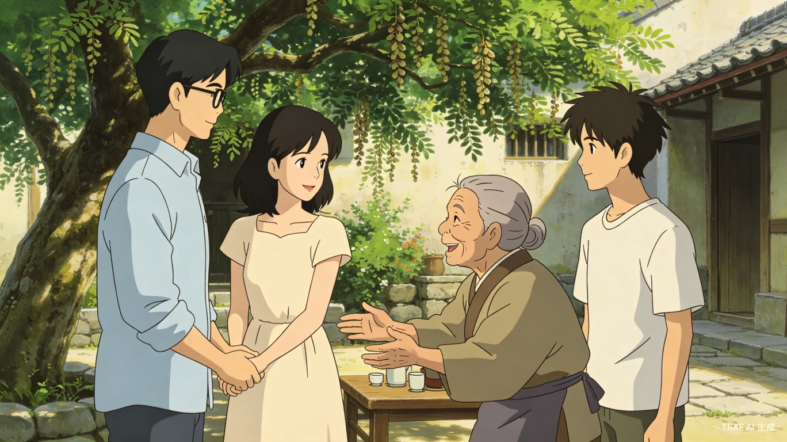
我站在几步开外，看着这一幕。不是感动——我那时候脑子里没什么煽情的词。就是觉得这画面很自然，像庄稼地里一茬庄稼收了又种了一茬新的。北斗七星挂在那儿也不知道多少万年了，多少代人抬头指过它。堂哥指给我看，堂哥指给星星看，以后星星大概也会指给别人看。
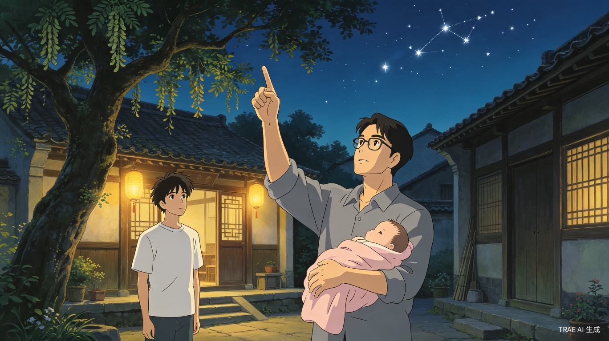
我读研后的那个暑假。一天晚饭后，堂哥在院子里改论文，电脑屏幕的光把他的脸照得发白。我收拾了碗筷出来，他头也没抬，说了句："今晚你带他们去看星星吧，山上应该没什么云。我得赶完这个。"
他说得轻描淡写，我应得也轻描淡写——"行。"转身就去村里喊孩子。
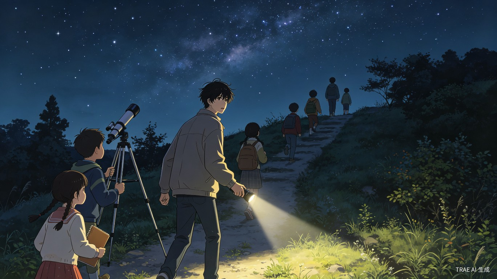
但往山上走的路上，我心里开始打鼓。以前都是他带队，我在后面当"助手"——帮忙拿东西、拦着乱跑的孩子。今天是我一个人站在前面。阿福他们已经长高了不少，问题还是老一套的奇怪："今天能看到流星不？""有没有飞碟？""星星上有没有和我们一样的人？"
我清了清嗓子，学着堂哥的样子，先让大家安静，然后指着天："你们看，那七颗，北斗七星。连起来像不像一个勺子？"
"像！"孩子们齐声答。
"找到它，就能找到北。"我自己说出来的时候，恍惚了一下——这句话，当年也是在这个山头上，堂哥说给我听的。
我又指了几个星座。有的记得很清楚，连星等都能说出来——当年看堂哥的手抄星图时背下来的。有的忘了名字，就老实说："这个星座名字太复杂，我晓不得怎么念了。但它每年冬天都会在这个位置。"孩子们并不在意名字对不对，他们在意的是天上有这么多东西可以看、可以猜。
下山的时候，阿福跑过来递给我一颗从路边摘的野果，说："航哥，你讲得比远哥差一点，但也可以。"我说："谢谢。"他又补了一句："主要是远哥讲的我们好多听不懂，你讲的简单些。"
回到院子，堂哥还在电脑前。茶壶旁边多了一只杯子，里面倒了凉茶——是给我的。他眼睛没离开屏幕，说了句："回来了？"
"嗯。"我坐下，端起杯子喝了一口。茶是凉的，但正好，走了那么远的路。
他又问了句："北斗七星，你没指错吧？"我说："指错了他们也不知道。"他终于抬头看了我一眼，笑了一下，然后继续改论文。我们没再说话。蛙声渐起，电脑风扇嗡嗡地转，院子里弥漫着蚊香味和茶香。
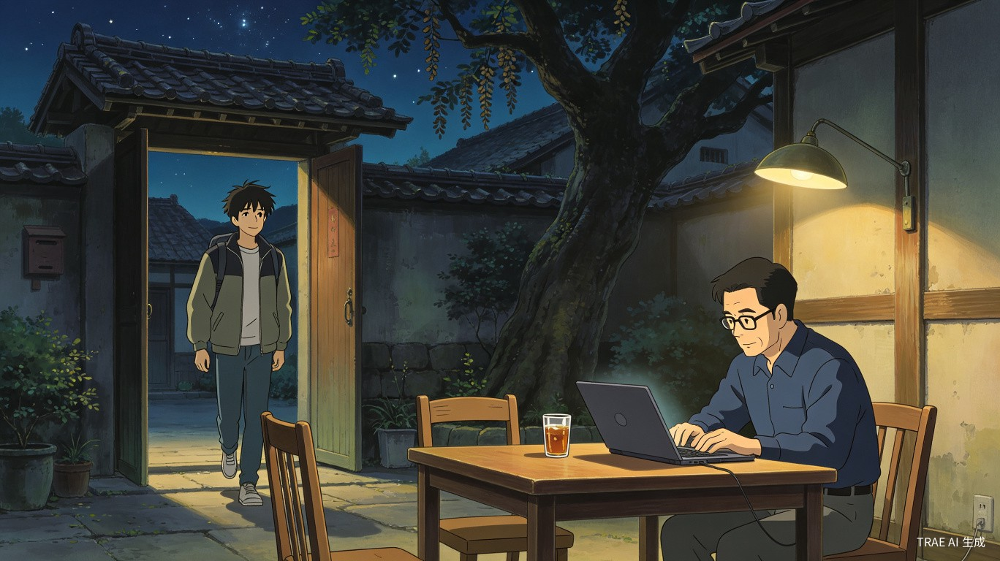
这就是兄弟——不用多话。该交接的交接了，该喝的那杯凉茶喝到了。他知道我今晚做了什么事，我也知道他知道。不需要说出来。说出来反而假了。
后来堂哥告诉我，他那晚其实从窗户里看了一会儿我们的队伍——手电光在松林里断断续续地闪，孩子们的叫嚷声远远地飘过来。他说："看见手电光拐过那个弯的时候，忽然想到第一次带你上山的情形。那时候你比阿福还小。"说完他低头继续敲键盘，像只是在陈述一个物理事实。
星星三岁那年夏天，已经能满地跑了。她妈妈给她扎了两个朝天的小辫子，走起路来一翘一翘的。堂哥对她管得很松——基本不限制她去哪玩，但有一条铁规矩：不准一个人去水边。除此之外，"她爱怎么耍怎么耍"。
一天傍晚，我和堂哥带星星走村后的田埂路。早稻收了，田里灌满了水准备插晚稻，水面上映着还没有完全变暗的天光，像一块块碎镜子趴在田里。空气里飘着新翻的泥土味和稻草被晒了一天后残留的温热气息。
萤火虫出来了。先是一两只，在稻田上空画着不规则的弧线。然后越来越多，像有人在田间撒了一把会飞的碎星。星星看见了，松开她爸的手就跑过去抓。萤火虫当然抓不住——她的小手刚挥过去，虫子已经飘走了。她又跑、又挥、又扑空，急得直跺脚。
我和堂哥站在后面看着，不干涉。堂哥有个理论：小孩摔跤、扑空、失败，都是正常学习过程。只要不是危险的事，大人别插手。
星星折腾了好一阵，终于放弃了。喘着气走回来，抬头看看天——天已经黑了大半，星星开始一颗一颗亮起来。她又看看稻田里飞舞的萤火虫。安静了几秒钟，忽然说："萤火虫是地上的星星，天上的星星是飞不动的萤火虫。"
我和堂哥同时愣住了。不是那种电视剧里夸张的"震惊"，是真的不知道该说什么——一个三岁的孩子，用这么朴素的方式说出了天和地的对称关系。
隔了几秒，我说："哥，这丫头比你强。"
堂哥笑了，是那种从心底里高兴的笑。他把星星抱起来扛在肩上，说："她奶奶说的——碎娃娃嘴里有神。"然后指着最近的一只萤火虫，开始讲："你晓不晓得萤火虫为什么会发光？它的肚子底下有一种特别的物质——"
星星骑在他脖子上，注意力已经被别的东西吸引走了（大概是一只飞过来的蛾子）。堂哥也不管她有没有在听，继续讲萤火虫的发光原理。我在后面听着，觉得这画面真有意思——一个天体物理的老师在稻田边给一个三岁小孩讲生物荧光，讲得和他在大学课堂上一样认真。
那天晚上回家，堂哥把星星那句话记在了手机备忘录里。我瞄了一眼：标题是"星语录"，下面已经有好几条了——"月亮是太阳晚上用的手电筒""云把星星关起来了""下雪是星星掉下来摔碎了"。
嫂子端着一盘切好的西瓜从厨房出来，看了一眼堂哥的手机，笑着摇头："你就惯她。以后让她学天体物理？"堂哥一本正经地说："那要看她自己的兴趣。不过语言表达这一块，随你。"嫂子愣了一下，反应过来他在夸她，低头咬了一口西瓜没接话。我在旁边啃着西瓜，心想这一家三口的相处方式真有意思——两个人都在各自的领域里很认真，但在一起的时候互相拆台、互相抬杠、互相从对方身上找优点。不腻歪，但很稳。
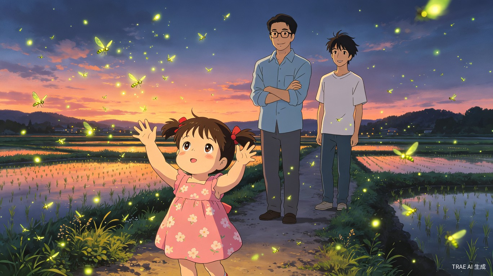
又过了一年。暑假末尾，农历月底，没有月亮。堂哥说今晚是今年最后一次可以看到清晰银河的机会了——八月过后雨季开始，云会越来越多。他问星星想不想上山看银河，星星问："银河是什么？"堂哥说："就是很多很多星星挤在一起，像一条河。"星星想了想，说："去。"
三个人上山。星星走了一小半路就撒娇说走不动了，堂哥把她背起来。她趴在爸爸背上，脸埋在他肩窝里，哼着一首自己编的歌，歌词乱七八糟的，什么"天黑了呀——星星出来了呀——我不想走了呀——"
山顶的气温比村里低了好几度，风一吹有点凉。堂哥把带来的旧摊子铺在地上，又把一件外套披在星星身上。星星裹在外套里，只露出一个小脑袋，看上去像一只蹲在窝里的小鸟。
银河已经在头顶展开了。和往年一样壮阔、震撼、让人说不出话。但这次不一样——多了一个四岁的小观众。
星星仰着头看了很久。她不像大人那样被震撼得沉默——孩子对大的东西没有那么强烈的反应，他们的"大"和"小"还没有完全建立参照系。银河在她眼里大概就真的是"河"，只是在很高的地方。
然后她说话了："银河像奶奶晾的白布，被风吹皱了。"
堂哥侧过头看我。不是那种意味深长的凝视——就是转头看了我一眼，好像在确认"你也听到了吧"。他脸上带着一种说不上来的表情：不是感动哭了那种，而像是——一个教物理的人，忽然被四岁的女儿用一个比喻解决了一个他多年找不到恰当语言来描述的问题。
他自己讲银河讲了这么多年，从来没用过"白布被风吹皱"这个比喻。但他知道这个比喻是对的。
"对。"他说，声音比平时低了些，"就是这样的。"
然后他开始给星星讲银河系的形状。"银河是圆盘状的，像一个特别大、特别扁的饼。我们住在饼里面。所以你看到的是饼的侧面——侧面看起来就是一条带子。"星星显然没完全听懂，但她点着头，大概是因为喜欢"饼"这个字。
"那饼上面有糖吗？"星星问。
"有。每一颗星都是一粒糖。有的是白砂糖，有的是冰糖。"堂哥说。
"那我要吃冰糖的！"
我坐在旁边，把两人斗嘴的话有一搭没一搭地听进去。天有些凉了，星星打了个喷嚏，堂哥把外套又裹紧了些。银河还在头顶亮着，和去年一模一样，和前年一模一样，和许多年前我五六岁时在黑夜里仰头看到的——当然那时候还看不到银河的全貌——一模一样。
有些东西，就是这样一代代传下来的。不是刻意教，是自然而然地流过去，像溪水流过石头。堂哥从奶奶那里学到了草药的名称，从那个不知名的物理老师那里学会了认星座；我把这些再传给阿福和小满；堂哥正在传给他的女儿。没有人立一个牌子说"此处正在进行文化传承"——但该流的都在流。
下山的时候，星星趴在堂哥背上睡着了。堂哥脚步放得很慢，每一步都小心地踩稳了才走下一步。我跟在后面，用手机的光照着脚下的路。走到半山腰，堂哥忽然停了一下——他说："听。"我们都不出声。松树林里除了风声什么都没有。然后我听见了：远处村里隐约传来一声狗叫，紧接着几声蛙鸣，又归于寂静。堂哥继续走，说："这声音也是在传承——我小时候每晚都是听着这个睡着的。"
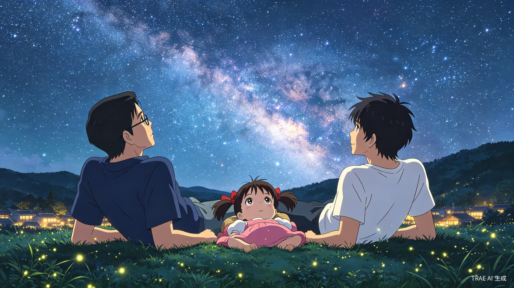
暑假的最后一天。明天一早的汽车回省城。
晚上收拾完行李，我在房间里坐了一会儿，觉得闷，就走到院子里。奶奶已经睡了，堂哥的房间灯还亮着——透过窗帘能看见他伏案的身影，大概又在改论文。
我在老槐树下坐下来。树干粗得一个人抱不过来，树皮粗糙温暖，像老人家的手心。这棵树站在这里不知道多少年了——我爸说他小的时候树就这么大，堂哥说他小的时候树也这么大。谁也说不清它是哪一年种下的，也说不清是谁种的。但它就是站在这里，每年夏天照样长叶子、落槐花。
蛙声还在。今晚没有月亮，星星比昨晚更多。银河西移了一些——不是肉眼能看出的一晚之变，但我熟悉这个角度的银河，它每年夏天从东北方向升起来，秋天往西南方向沉下去。堂哥教过我这个。他说银河像钟表上的时针，只不过一年只转一圈。
风从稻田那边吹过来，带着水汽和稻花味。这味道我从小闻到大，从来没觉得腻。城市里有香水、有咖啡、有汽车尾气，但没有这种味道——不是香，是一种清冽的、带着泥土腥气的味道。深吸一口，觉得肺里都凉快了。
我没有觉得难过。这不是告别——堂哥每年都回来，我也每年都回来。这不是什么需要山盟海誓的事，就是生活本身的样子。他选择留在离家近的城市教书，我选择在省城工作，但每年暑假都回来住几天——这不是约定，是一种不需要说出来的默契。
我想起村里的变化。老磨坊去年终于塌了半边屋顶，恐怕再过两年就彻底没有了。和堂哥一起找到的那本书大概也烂掉了。村小的学生越来越少，去年只剩十七个孩子，据说今年县里要并校，孩子们都得去镇上读书。
但有些东西不会变。银河不会变——不是说它永恒不变（堂哥会纠正我：银河也在演化，只是尺度过大，人类这一辈子看不出来），而是说它每年夏天都会来。北斗七星不会变——它们在天空中相对位置的变化对人类来说太慢了。老槐树不会变——至少在我的有生之年不会变。
奶奶的腿脚不如以前了，去年还能自己上山摘茶，今年就只能在院子附近走走了。但她还在厨房忙活，舍不得让别人替。星星明年就会认得更多星座了——她上次已经能自己找到北斗七星，虽然有时候会把仙后座搞混。
我想：堂哥每年都会回来，我也会。不是因为和谁约定了，是因为这里需要有人看星星、需要有人教孩子们认星座。不是什么了不起的事业——就是每年上山走一趟，用手电筒照亮脚下的路，教孩子们抬头。
这算不上责任。就是一种——习惯。就像要吃饭、要喝水、要呼吸一样自然。做了就做了，不需要理由。
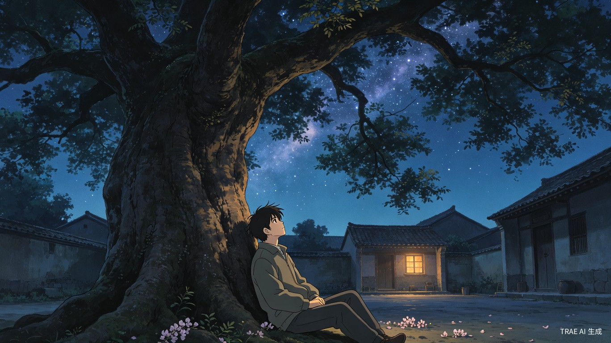
几年后的一个冬夜，农历腊月。
我在省城的阳台上晾衣服，偶然抬头，看见西南天空有一颗亮得刺眼的星。城市的光污染严重，平时能看到的星寥寥无几，但这颗实在太亮了——在城市霓虹灯的映照下，它依然稳稳地钉在天上，像一颗钉子钉在暗蓝色的绒布上。
我拿手机拍了张照。照片里只有一团模糊的光点，根本看不清楚是什么星。但这不要紧——我知道是什么。金星，大概。也可能是木星。冬季傍晚西南方向的亮星，跑不出这两个。堂哥教过的。
我打开微信，找到堂哥的头像，打了几个字："哥，今晚天上有颗星特别亮。"
打完，手指悬在"发送"键上方停了几秒。然后我把消息删了。
没什么特别的原因。就是觉得不必发。堂哥肯定也看见了——以他的习惯，每晚睡前都会去阳台看几分钟天。不管是在省城的公寓还是在老家的院子，他每晚都看。不是刻意的仪式，就像有些人睡前要刷牙、有些人要喝杯水一样，他睡前要看几分钟天。
所以他知道。不需要我告诉他。
这不是什么心照不宣的默契——这是两个同样习惯抬头看天的人，知道对方此刻大概也在做同样的事。好比两个每天早上六点起来跑步的人，不需要在出门前互相发一条消息说"我今天也去跑步"。你知道他会去，他也知道你会去。仅此而已。
我放下手机，站在阳台上又多看了两眼。然后晾完剩下的衣服，回屋继续改下周要交的报告。阳台外面，那颗亮星还在。城市在它下面喧嚣——车流声、空调外机的嗡嗡声、远处有人在放音乐。但这些声音都传不到那颗星那里。它安静地亮着，像在很多年前那个山顶上一样安静。
银河是看不见了——城市的夜空太亮，光污染把银河彻底淹没了。但我知道它在那里。每年夏天，它依然准时经过这个城市的头顶，只是我们看不见。而在千里之外的村子里，它清清楚楚地横在天空，老槐树的树梢被它的光芒勾勒出一个淡淡的剪影。堂哥也许正站在院子里，裹着一件旧棉衣，仰头看着同一个方向。
又或者他没在看天。也许他在改论文、在哄星星睡觉、在给嫂子讲白天学校里发生的趣事。这不重要。重要的不是每时每刻都在看星星，而是心里装着那一片星空——知道它在，知道它每年夏天都会来，知道在某个山顶、某棵槐树下，有一群人曾经躺在凉席上数过流星，以后还会有人去数。
我把手机放在桌上，打开电脑继续写报告。窗外的光污染把夜空染成了灰橙色，但最亮的那颗金星仍然可见。它穿越了几十亿公里的太空，穿越了城市所有的霓虹灯和路灯，准确地落在我阳台上方约四十五度角的位置。堂哥教的：金星轨道在地球内侧，所以它只出现在傍晚或黎明。傍晚出现的叫长庚星，黎明出现的叫启明星。同一颗星，两个名字——取决于你看它的时间。
我觉得这个知识挺有用的。下次回村，可以和星星讲。
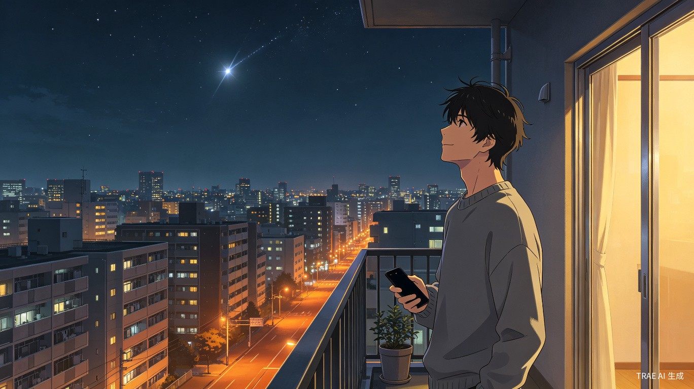
——全书完——